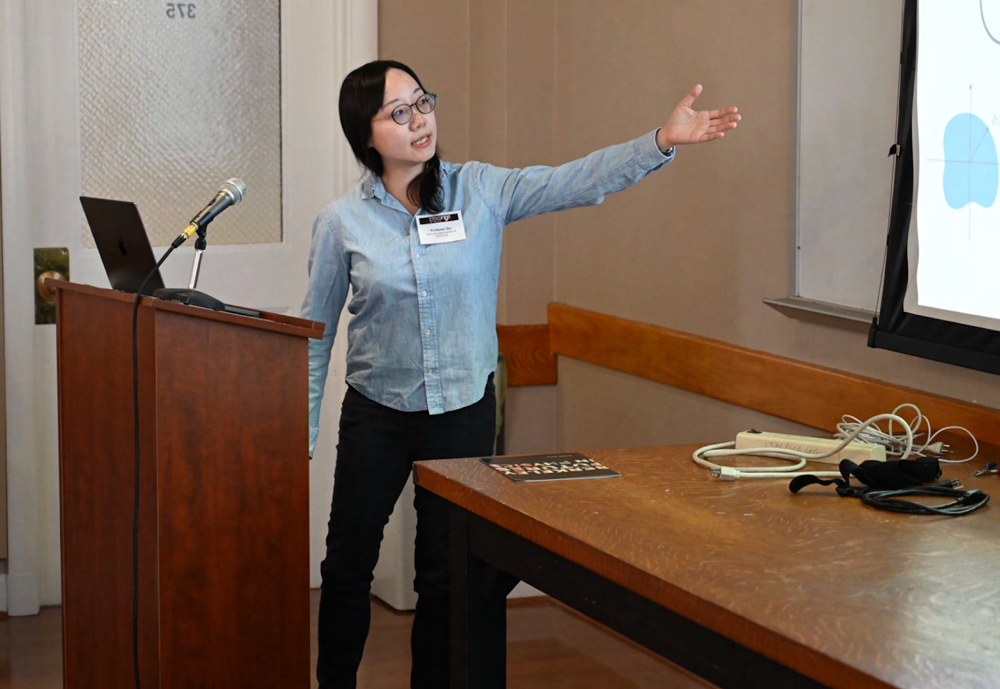

Yi-Hsien (Sherry) Du
Postdoctoral Fellow, Simons Collaboration on Ultra-Quantum Matter · MIT
I am a theoretical physicist studying emergent collective phenomena in quantum Hall states, moiré quantum materials, and (non-)Fermi liquids — connecting deep theoretical structures to real experimental phenomena.
News
- Mar 2027 Participating in the KITP program, UC Santa Barbara.
- Sep 2026 Visiting the Institute for Advanced Study, Princeton.
- Jul 2026 In residence at the Aspen Center for Physics.
- Apr 2026 Invited seminar at Harvard University.
Research
My work lies at the interface of quantum field theory and strongly correlated many-body systems. I am interested in how rich collective behavior emerges from the interplay of topology, geometry, and interactions in quantum matter.
Quantum Hall States
Geometric and gravitational responses, chiral gravitons, and the effective theory of fractional quantum Hall fluids.
Moiré Quantum Materials
Skyrmion Chern bands and emergent topological structure in twisted two-dimensional materials.
(Non-)Fermi Liquids
Controlled theories of metallic states beyond the Landau paradigm and their transport signatures.
Selected Publications
-
Controlled Theory of Skyrmion Chern Bands in Moiré Quantum Materials: Quantum Geometry and Collective Dynamics
Preprint, 2026
-
Quantum vortex lattice: Lifshitz duality, topological defects and multipole symmetries
Phys. Rev. B 110, 035164 (2024)
-
Nonlinear Lifshitz Photon Theory in Condensed Matter Systems
Phys. Rev. B 109, 035135 (2024)
-
Noncommutative Field Theory of the Tkachenko Mode: Symmetries and Decay Rate
Phys. Rev. Research 6, L012040 (2024)
-
Nonlinear bosonization of Fermi surfaces: The method of coadjoint orbits
Phys. Rev. Research 4, 033131 (2022)
-
Noncommutative gauge symmetry in the fractional quantum Hall effect
JHEP 08 (2024) 125
-
Volume-preserving diffeomorphism as nonabelian higher-rank gauge symmetry
SciPost Phys. 12, 050 (2022)
Full list on Google Scholar
Academic Background
-
2024 –
Postdoctoral Fellow, MIT Simons Collaboration on Ultra-Quantum Matter
-
2024
Ph.D. in Theoretical Physics, University of Chicago Advisor: Dam Thanh Son
-
2023
Graduate Fellow, KITP, UC Santa Barbara Mentors: Cenke Xu, Leon Balents
-
M.Sc.
Imperial College London Advisor: Arkady Tseytlin
Awards & Honors
- 2024 Pappalardo Postdoctoral Fellowship finalist, MIT
- 2023 KITP Graduate Fellowship, UC Santa Barbara
- 2022 Berkeley Futures in Physics distinction, UC Berkeley
- 2021 Plotnick Physics Fellowship, University of Chicago